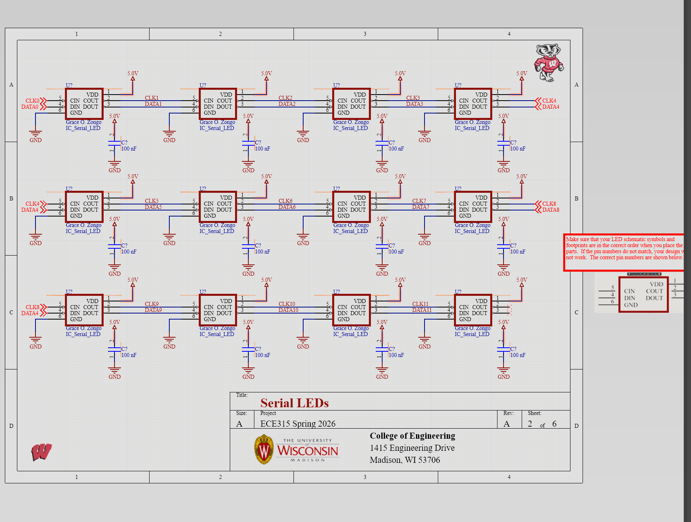
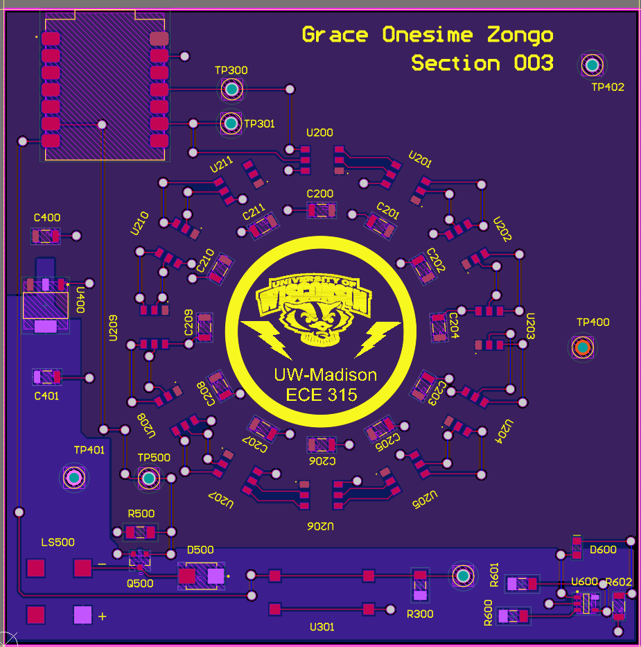
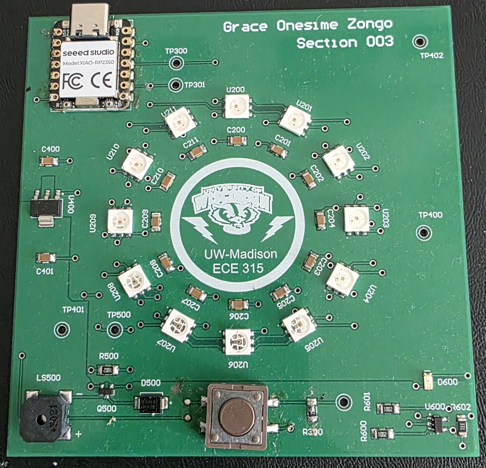
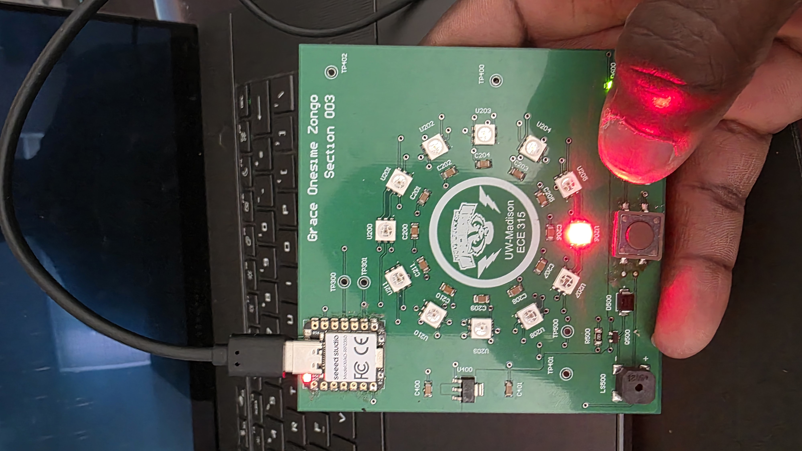

Reflex Game – ECE 315 PCB Design Lab
Overview
Multi-sheet PCB designed in Altium for a microcontroller-based reflex game built around the Seeed Studio XIAO RP2350. The board drives a chain of 12 addressable LEDs as the visual stimulus, uses a piezo buzzer for audio feedback, and integrates regulated 3.3 V power and voltage supervision. ECE 315 Intro Microprocessor Lab — UW–Madison, Spring 2026.
Subsystems
Serial LED Array
12 addressable LEDs daisy-chained on a single MCU data line, each with its own decoupling cap.
Power
TLV1117LV33 LDO regulates the 5 V input down to a clean 3.3 V rail, with test points for bring-up.
Buzzer Driver
Piezo buzzer driven by a low-side NMOS, with a gate pulldown and a Schottky flyback diode.
Reset & Voltage Supervisor
MCP131X-2X monitors the 3.3 V rail (2.93 V threshold) with watchdog input, manual reset, and an indicator LED.
Schematics & PCB
{kind=link}

{kind=link}

{kind=link}

{kind=link}

Demo
Quick demo of the assembled board running the reflex game.
What I Learned
- Multi-sheet hierarchical schematic capture in Altium.
- Embedded support circuitry around a digital MCU — decoupling, low-side switching, flyback protection.
- Brown-out and watchdog supervision for reliability beyond the MCU's internal POR.
- End-to-end PCB workflow: schematic → DRC → layout → bring-up → firmware demo.